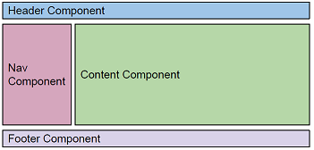

Components
exercise #1
Create a module with all the needed components components to illustrate the following.

exercise #2
- Create a parent component which has a list of items accessible
via a method
- Create a child component which accepts as input the list of the
items from the parent component and displays the list on screen
exercise #3
The parent should display a list of items only if the child allows it.
Use inline template
exercise #4
Create a component which will display the message:
- “Message from OnInit” on the onInit method
- “Message from AfterViewInit” on the AfterViewInit method
Services
exercise #5
Create a service which will return an array of items, and inject this
service in a component. The results should be shown in the console
exercise #6
Create another component and inject the same service
exercise #7
- Remove the providedIn: 'root' from service and run the app.
- Add the service in the providers of each component
Ng Directives
exercise #8
Having the array ["one", "two", "three", "four", "five", "six", "seven",
"eight", "nine", "ten"]
- In a component display on an unordered list the label of each item
- If the item is the first one, display the label “Is First”
- If the item is the last one, display the label “Is Last”
The array should be on a service
exercise #9
Having the array people: any[] = [ "name": "Douglas Pace", "age": 35, "country": 'MARS'];
- Display the name of the user in blue, if country is UK
- Display the name of the user in red, if country is USA
- Display the name of the user in green, if country is HK
- Display the name of the user in black in any other cases
Custom Directives
exercise #10
Create a directive which will highlight a text on hover
and will have the default state on blur
Built-in Pipes
exercise #11
- Create a service with a method which will return a typed object with
properties:
- date = today
- amount = 1.5
- Consume the service in a component and display the date in format
yyyyMMdd and the amount in format €amount
Custom Pipes
exercise #12
Create a pipe which will get as input a date and transforms it by default
to “dd/MM/yyyy”. Use a boolean parameter which if true will return the
time in format “hh:mm:ss” concatenated with the date
HTTP
exercise #13
- Create a service that GETs data from
https://restcountries.eu/rest/v2/
Create a model with properties:
- name
- topLevelDomain
- alpha2Code
- alpha3Code
- capital
- region
- Consume the service in a component and display the results in an
inline template
Use local reference and viewChild() to get access to DOM elements. Use ng-content to inject html code to a component.